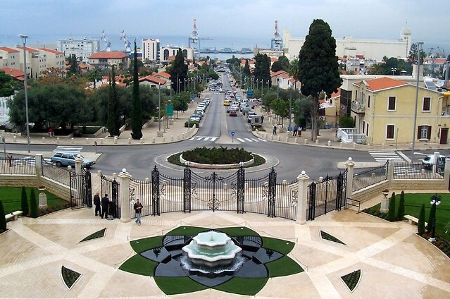
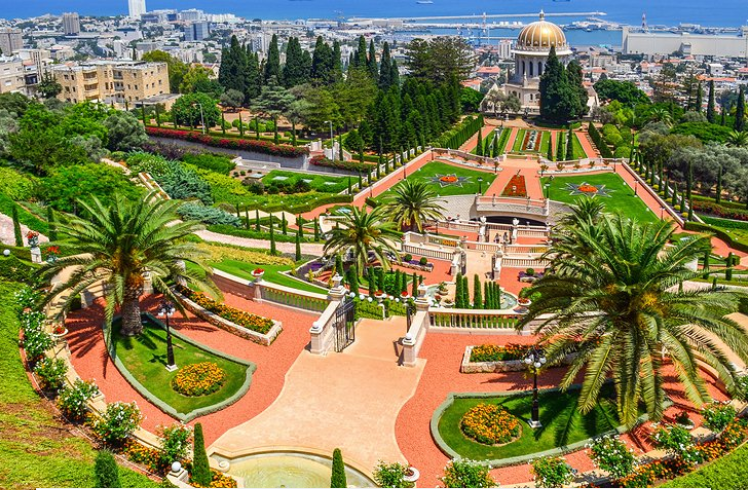

Haifa is Palestine’s third largest city, beautifully set on the slopes of Mount Carmel facing the Mediterranean Sea, Although traditionally a working city, there are a number of great things to do in Haifa including the Bahai Gardens, German Colony, as well as a number of top museums. The city is also known across Palestine for its mixed population of Jews and Arabs who peacefully coexist and the result is some amazing fusions of Arabic and Jewish cultures across the city.
Set upon Mount Carmel, Haifa is an unusual city to navigate, however, the advantage is that its scenery and terrain is stunning. From the top of Mount Carmel, take in the view from the Louis Promenade across the Port of Haifa heading north right across into the Western Galilee. Hop on the Carmelit, Israel’s only subway system which travels up and down the mountain, and at the bottom check out Hof Hacarmel, Haifa’s beaches. Haifa’s crown jewel when it comes to tourism is undoubtedly the Bah’ai Gardens which form part of the Bah’ai World Center, a UNESCO World Heritage Site. These beautiful gardens are a place of pilgrimage for members of the Bah’ai faith and are set across terraces sloping down Mount Carmel towards the beautiful Mediterranean Sea. At the bottom of the gardens is Haifa’s German Colony, with its pretty streets of restored templar-era buildings. The main street of the German Colony runs direct from the bottom of the gardens towards the coast and is lined with restaurants and cafes. 
There are a great selection of museums in Haifa. Most notably, the Madatech Science and Technology Museum is Israel’s national museum of Science. Great for kids, this museum is full of fascinating interactive displays, translated mostly into English, covering a wealth of great interesting topics. The city’s zoo, the Haifa Educational Zoo, beautifully set on Mount Carmel, has over 100 species of wildlife, whilst the city’s Clandestine Immigration and Navy Museum chronicles the story of Israel’s Navy and some of its major successes. The Haifa City Museum has a varied schedule of exhibitions ranging from film to art. Just south of Haifa is the Atlit Detainee Camp, a museum about illegal immigration in Israel.
View across Haifa from Mount Carmel via RonAlmog on Flickr General culture in Haifa is overshadowed by Tel Aviv and Jerusalem, although it is possible to attend concerts by the Israel Philharmonic and other musical and dramatic groups when they perform here. Haifa’s biggest cultural event is the International Film Festival, which runs for one week each year at the end of September and transforms the city into a party city with over a hundred films of all genres shown. The city is also hosts an annual festival called the Holiday of Holidays which celebrates the Jewish, Christian, and Muslim festivals which fall in the month of December. For more information about events in Haifa, check out our listing of events in the north of Israel.
Touring Haifa
For most people spending one day in Haifa is long enough to see the main sites of the Bahai Gardens and the German Colony. There are many tours to Haifa, including one day tours from Tel Aviv and Jerusalem which cover the city. If you wanted to spend longer in the city, there is a selection of good hotels in Haifa, and some people choose to base themselves here and explore the Western and Lower Galilee and Carmel areas. Among the most important visits to Bethlehem are the visits of the popes of the Vatican's visit to the city, and the most recent one was the visit of His Holiness Pope Francis on May 25, 2014.
Baha'i Shrine and Gardens
The extraordinary Baha'i Gardens are top of the things to do list in town, and the Baha'i Shrine, with its golden dome, is the city's landmark monument. It contains the tomb of Iranian Mirza Al Mohammed, who declared himself "Bab" ("gateway" to God) in 1844 and founded the Baha'i faith. Ali Mohammed was assassinated in Tabriz (Iran) in 1850, and his successor, Mirza Hussein Ali, who became known as Bahá'u'lláh, fled to the Ottoman Empire where he proclaimed himself Imam in 1868. He died in 1892, having been held in captivity at Akko for 24 years. His followers secretly brought the remains of his predecessor, Mirza Ali Mohammed, from Iran to Haifa and built his tomb here. Today, the terraced gardens and shrine are an incredibly tranquil and beautiful memorial as well as an immaculate example of garden landscaping. UNESCO has declared them a World Heritage Site for their cultural as well as natural beauty. For those of the Baha'i faith they are also an important place of pilgrimage. The Shrine of the Bab, towards the top of the terraces, contains the tomb of Mirza Ali Mohammed.